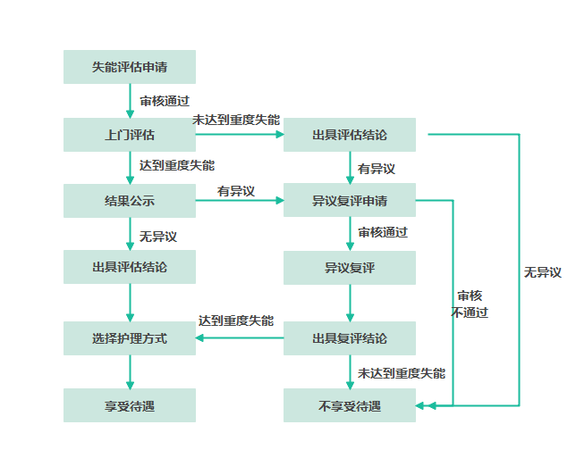

广西壮族自治区医疗保障事业管理中心关于进一步推进中区直驻邕单位参加南宁市长期护理保险制度试点工作的通知
 我要收藏
公共资源调用站点
文章分享
我要收藏
公共资源调用站点
文章分享
中区直驻邕各参保单位、参保人员：
为保障重度失能人员基本照护需求，提高重度失能人员健康水平和生活质量，进一步健全医疗保障体系，根据《自治区医保局自治区财政厅关于明确中区直驻邕单位参加南宁市长期护理保险制度试点有关事项的通知》（桂医保发〔2023〕26号）和《南宁市人民政府关于推进南宁市长期护理保险制度的实施意见》（南府规〔2023〕26号）要求，现就进一步推进长期护理保险（以下简称“长护险”）试点工作通知如下：
一、实施时间
2024年1月1日起实行，有效期5年（今后国家、自治区有新规定的，从其规定）。
二、参保范围
参加中区直驻邕单位职工基本医疗保险的参保人员（包括在职职工、符合享受职工基本医疗保险退休待遇的人员、灵活就业人员和在领取失业保险待遇期间的失业人员）。已享受工伤保险基金支付生活护理费的工伤人员不参加长护险。
三、参保登记
参加中区直驻邕单位职工基本医疗保险的单位和个人无需单独办理长护险参保登记、增减变动、信息变更、补缴、退休等手续，长护险征缴业务与职工基本医疗保险同步办理。
四、基金筹集
长期护理保险费与基本医疗保险费合并征收，试点阶段，通过划转职工基本医疗保险统筹基金和个人账户筹集，单位和个人不再另行缴费。长护险实行个人终身缴费制。
（一）在职职工以个人当期参加职工基本医疗保险的缴费基数为长护险缴费基数，按照用人单位和参保人员个人缴费同等比例分担的方式，其缴费比例分别为0.15%，用人单位缴费部分每月从职工基本医疗保险统筹基金中划拨。参保人员个人缴费部分，从每月划入职工医保个人账户的金额中扣缴。
（二）退休人员按照上年度个人基本养老金或退休金（当年退休人员以领取退休待遇当月的个人基本养老金或退休金）作为长护险缴费基数，按照缴费比例0.15%缴纳长护险保费，每月从划入职工个人账户的金额中扣缴。
（三）灵活就业人员（含退休人员）以统账结合方式参保的，按职工基本医疗保险个人缴费基数0.3%费率，以5:5的比例分别从职工基本医疗保险统筹基金和个人账户划拨，即每月从职工医疗保险统筹基金和个人账户划拨金额均为缴费基数的0.15%。
（四）灵活就业人员（含退休人员）以单建统筹基金和住院医疗保险方式参保的，由个人按缴费基数的0.3%的费率缴费，可选择按季、半年、年的第一个月缴费；灵活就业在职人员在缴纳基本医疗保险费同时缴纳长护险费。
（五）领取失业保险待遇期间的失业人员缴费比例和缴费方式与统账结合方式参保的灵活就业人员一致。
五、待遇保障
（一）待遇享受条件。参保人员因年老、疾病、伤残等原因导致生活不能自理，经医疗机构或康复机构规范诊疗、失能状态持续6个月以上，经申请失能等级评估认定的重度失能人员，可按规定享受长护险待遇。参保人员申请长护险待遇时，应在自治区本级足额缴纳职工基本医疗保险及长护险满1年，已享受长护险待遇的参保人员不受最低缴费年限条件限制。
（二）护理服务范围
1.护理服务方式。
（1）机构护理。符合长护险待遇享受条件的人员入住长护险定点护理服务机构，由长护险定点护理服务机构根据护理服务资质提供全日制生活照料服务、医疗护理服务。
（2）居家护理。符合长护险待遇享受条件的人员，具备居家照护条件的，由长护险定点护理服务机构按照协议约定提供居家生活照料服务、医疗护理服务。
2.护理服务内容。护理服务内容包括基础护理（清洁护理、饮食护理、排泄护理、移动与安全照料等）与部分医疗护理（压疮护理、管道护理、病情观察、康复支持等）；提供护理服务的机构或人员应具备相应的护理服务资质。
3.待遇支付标准。
（1）符合长护险享受待遇条件的重度失能人员，接受规定的护理服务方式，发生符合护理服务项目有关的护理费用，由长护险基金按照规定的护理待遇标准支付。
（2）对符合规定的护理服务费用，长护险基金支付不设起付线，待遇支付标准如下：
机构护理实行按床日付费，重度失能Ⅲ级、重度失能Ⅱ级、重度失能Ⅰ级的失能人员每人每天分别为66元、62元、57元，按实际护理服务天数计费。
居家护理实行按项目付费，重度失能Ⅲ级、重度失能Ⅱ级、重度失能Ⅰ级的失能人员每月定额标准均为1850元，用于支付参保人员发生的生活照料服务项目和医疗护理服务项目费用。
4.待遇计算方式。经失能等级评估符合长护险待遇支付条件的重度失能人员，评估结论公示后，从定点护理服务机构按规定提供服务之日起享受长护险待遇。重度失能人员因病住院治疗，从入院的次日起停止享受长护险待遇，出院的次日按照规定恢复其享受相应的长护险待遇。
六、申报办法
（一）申报材料
1.申请人有效身份证或户口本；
2.由代理人办理的：
（1）代理人的有效身份证或户口本；
（2）《中区直驻邕单位长期护理保险业务代办委托书》原件；
3.《中区直驻邕单位长期护理保险失能评估申请表》原件；
4.《申请人承诺书》原件；
5.《表B长期护理失能等级自评表》原件；
6.《申请人基本情况调查表》原件；
7.因疾病、伤残导致失能的申请人，需提供有效的病历、医疗诊断书、与失能状态相关的医学检查检验报告等完整病历材料的原件或复印件。
相关表格请在“桂医保”微信公众号平台、广西壮族自治区医疗保障局官方网站（http://ybj.gxzf.gov.cn/）下载，也可在自治区医保中心服务大厅领取。
（二）申报流程

（三）申报地址
南宁市星湖路26号1号楼自治区政务服务中心医保分中心服务大厅。
七、咨询电话
政务服务便民热线，（0771）12345；
平安养老保险公司，0771-5501132；
人保财险保险公司，0771-5587155；
泰康养老保险公司，0771-2215316；
太平养老保险公司，0771-2898460；
自治区医保中心，0771-5881060。
附件：1.中区直驻邕单位长期护理保险失能评估申请表
2.申请人承诺书
3.表B长期护理失能等级自评表
4.申请人基本情况调查表
广西壮族自治区医疗保障事业管理中心
2024年3月25日
关联文件：
扫一扫在手机打开当前页
 桂公网安备 45010302002135号
桂公网安备 45010302002135号